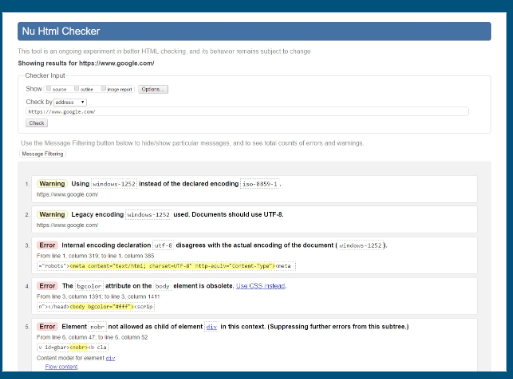

Lesson 11 : Enhanced Text Editors
Enhanced Text Editors
There are programs that help coders write code. The category is called enhanced text editors. These are programs that aid coders in writing code by doing things like highlighting tags and components in different colors, auto-completing or auto-formatting tags, etc.
Text editors for Windows and Mac
One of the most popular text editors for Windows is Notepad++ (https://notepad-plus-plus.org/).
For the Mac, I recommend BBEdit (https://www.barebones.com/products/bbedit/).
For Linux, the easiest to learn is EMACS (https://www.gnu.org/software/emacs/), though purists prefer vi (https://ex-vi.sourceforge.net/).
Integrated Development Environments (IDEs)
An Integrated Development Environment (IDE) is a program that is designed to aid a software developer in many ways. An IDE includes a code editor, tools to test and execute the code, and tools to debug the software.
Some IDEs are language-specific, others support several languages.
Online IDEs
There are several online IDEs, but most of them require subscription or other payment in order to enjoy adequate functionality.
Two IDEs that do have some free functionality are Replit (https://replit.com/) and StackBlitz (https://stackblitz.com/).
Validation
There are several markup validation services available on the Web. We’re going to use the W3C validation service (https://validator.w3.org/) because it’s hosted by W3C which is the organization that sets Web standards.
Ex:
